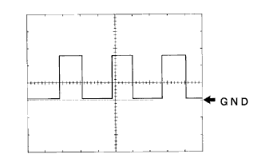

Rightning System ECU terminal array |
Use SST (Toyota Electrical Tester) to inspect the voltage and conduction between terminals ← → body ground.
| Terminal symbol [Terman number] | Input and output | item | Measurement conditions | standard |
|---|---|---|---|---|
| DCTY [A21] ← → Body Earth | input | Voltage | The driver's seat door is fully closed → Open | 10-14V → 1V or less |
| PCTY [A5] ← → Body Earth | input | Voltage | Sliding door and back door are fully closed → Sliding door open | 10-14V → 1V or less |
| PCTY [A20] ← → Body Earth | input | Voltage | Sliding door and back door are fully closed → Back door open | 10-14V → 1V or less |
| Terminal symbol [Terman number] | Input and output | item | Measurement conditions | standard |
|---|---|---|---|---|
| ECUB [B30] ← → Body Earth | input | Voltage | Always | 10-14V |
| Terminal symbol [Terman number] | Input and output | item | Measurement conditions | standard |
|---|---|---|---|---|
| GND [E17] ← → Body Earth | - | Conduction | Always | There is an conductor |
| Terminal symbol [Terman number] | Input and output | item | Measurement conditions | standard |
|---|---|---|---|---|
| SIG [F8] ← → Body Earth | input | Voltage | Ignition switch on | 10-14V |
| Terminal symbol [Terman number] | Input and output | item | Measurement conditions | standard |
|---|---|---|---|---|
| ALTB [G1] ← → Body Earth | input | Voltage | Always | 10-14V |
| Terminal symbol [Terman number] | Input and output | item | Measurement conditions | standard |
|---|---|---|---|---|
| ILL [K2] ← → Body Earth | output | Voltage | Turn off (due to illuminated entry system control) | 10-14V → 1V or less |
| Terminal symbol [Terman number] | Input and output | item | Measurement conditions | standard |
|---|---|---|---|---|
| Haz [S17] ← → Body Earth | output | Voltage | Hazard switch OFF → ON | 10-14V → 1.3V or less |
Use SST (Toyota Electrical Tester) to check the voltage and conduction between the connector or the terminal and the body earth.
Use an oscilloscope to check the waveform between each connector.
| Terminal symbol [Terman number] | Input and output | item | Measurement conditions | standard |
|---|---|---|---|---|
| 1 [IG] ← → 9 [E1] | input | Voltage | Ignition switch on | 8-16V |
| 3 [HDLP] ← → 9 [E1] | input | Voltage | Head lamps off → lit | 5V or more → 1.5V or less |
| 5 [PRST] ← → 9 [E1] | input | Voltage | Always (initialization signal input terminal) | About 5V |
| 6 [WNG] ← → 9 [E1] | output | Voltage | After the ignition switch on, 3 seconds (warning lighting) → 3 seconds (warning turn off) | 1V or less → 10-14V |
| 9 [E1] ← → Body Earth | - | Conduction | Always | There is an conductor |
| 10 [RH1] ← → 9 [E1] | output | Voltage | Ignition switch on | 10-16V |
| 11 [LH1] ← → 9 [E1] | output | Voltage | Ignition switch on | 10-16V |
| 12 [SBR] ← → 21 [SGR] | output | Voltage | Ignition switch on | About 5V |
| 16 [SPDR] ← → 9 [E1] | input | Waveform | Run at about 20km/h | Pulse waveform (waveform 1) |
| 17 [RH2] ← → 9 [E1] | output | Voltage | Turn off head lamps → lit, headlamp lighting, no change in car height → Change vehicle height and maintain 3 seconds or more | 1V or less → 1.0-14.4V (17 seconds) |
| 18 [LH2] ← → 9 [E1] | output | Voltage | Turn off head lamps → lit, headlamp lighting, no change in car height → Change vehicle height and maintain 3 seconds or more | 1V or less → 1.0-14.4V (17 seconds) |
| 19 [SHR] ← → 21 (SGR | input | Voltage | Ignition Switch ON (no crew, no laggage room luggage, vehicle still state) | Approximately 2.5V |
| 21 [SGR] ← → 9 [E1] | - | Conduction | Always | There is an conductor |
| 23 [RH3] ← → 9 [E1] | - | Conduction | Always | There is an conductor |
| 24 [LH3] ← → 9 [E1] | - | Conduction | Always | There is an conductor |
Osciroscope waveform
|  |
Waveform 1
| item | Content |
|---|---|
| Measuring terminal | SPDR ← → E1 |
| Instrument set | 5V/Div, 20ms/Div |
| Measurement conditions | Run at about 20km/h |